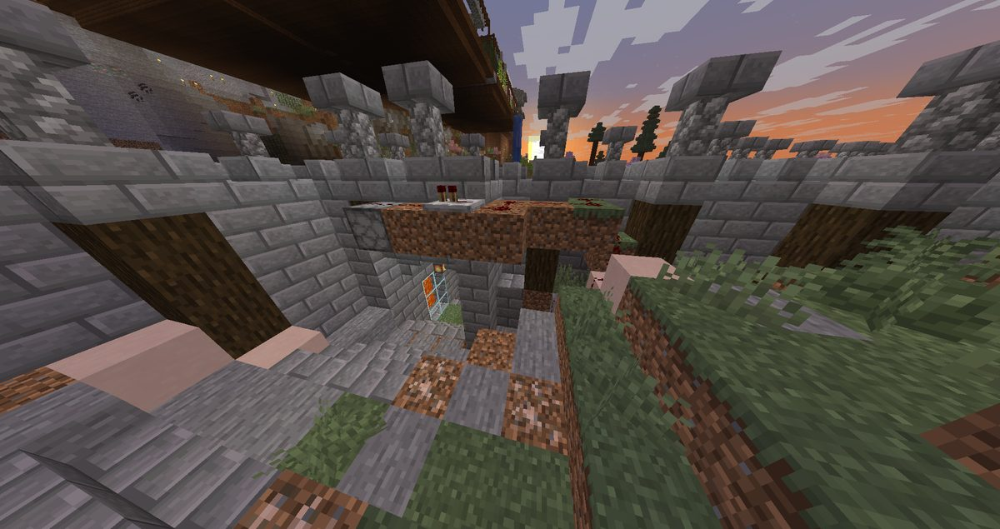
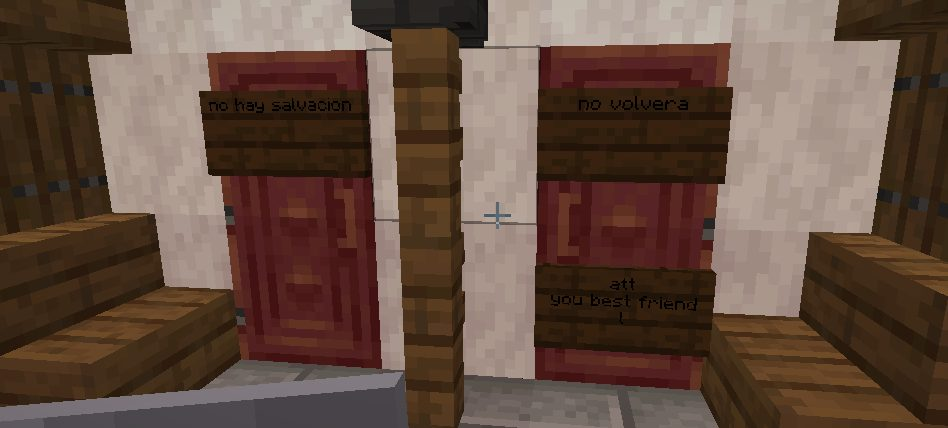
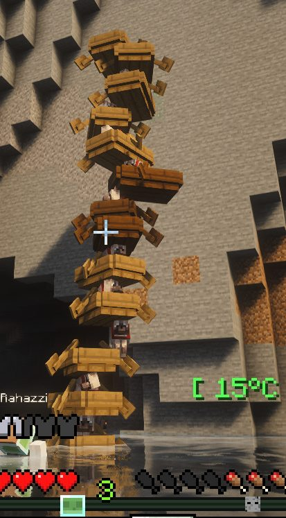
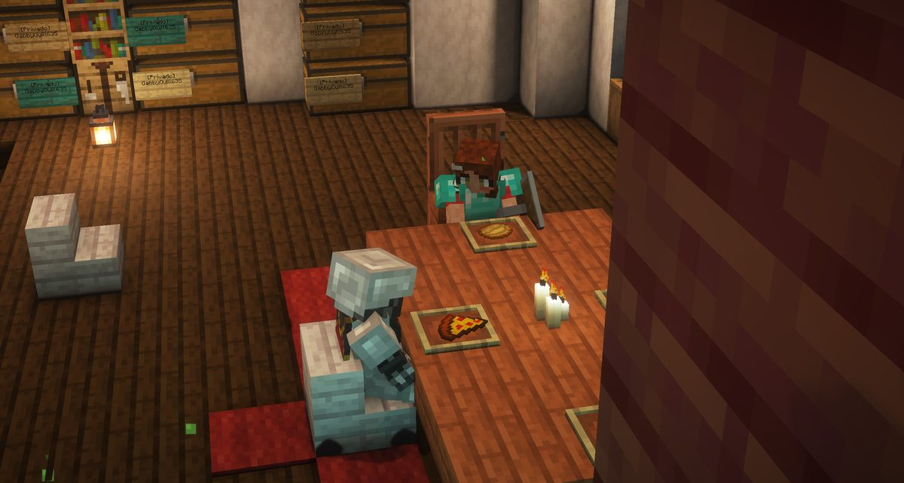
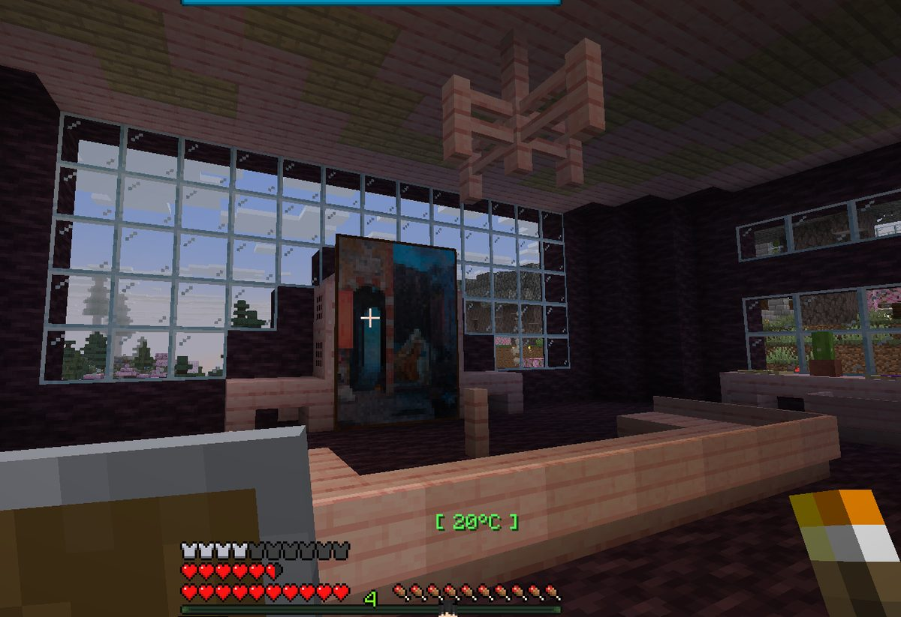

Boletín Oficial del Ayuntamiento del Reino · Se informa, no se alarma
EL HERALDO DEL REINO
Número 144 de septiembre de 2026Tarde del viernes 4 de septiembre a la mañana del sábado 5
EL AYUNTAMIENTO AUTORIZÓ LAS TRAMPAS A LAS TRES DE LA MAÑANA Y A LAS SIETE YA HABÍA UN HERIDO
Una vecina pidió permiso para defender su casa. Se le concedió en el acto y sin condiciones. Cuatro horas después, otro vecino pisó una placa de presión en la suya y le cayó encima una lluvia de veneno.
Redactado por la Oficina de Prensa del Ayuntamiento
PORTADA
«Es totalmente legal proteger su casa», y cuatro horas después ArsarFurro estaba envenenado en su propio salón

La casa de ArsarFurro por dentro, después. Sobre el montículo de tierra, el dispensador con los frascos todavía cargados. Debajo, las placas de presión.Archivo Municipal · pase el ratón para revelarla
A las 02:56 de la madrugada, NARUMl presentó ante esta administración una
petición razonada: «Sugiero que si van a permitir robos, se nos permita hacer trampas
en las casas», y añadió, por si quedaba duda, «No me nieguen la seguridad de mi
rancho». El Ministerio contestó en el mismo minuto y sin pedir un solo papel:
«Es totalmente legal proteger su casa». La solicitante acusó recibo con la
frase que esta Oficina considera el acta de la sesión: «Listo, pongo trampas».
A las 06:50 —tres horas y cincuenta y cuatro minutos después— ArsarFurro
denunciaba lo siguiente: «Construyeron una trampa mortal en mi casa, al pisar las
placas de presión caían pociones de veneno». Aportó fotografía. Se aprecia el
dispensador, se aprecian los frascos y se aprecia que la casa es suya.
Esta Oficina hace constar que no consta que la trampa de ArsarFurro fuera puesta por
la solicitante, y que a estas alturas eso ya da igual: entre la autorización y la
primera víctima pasaron menos de cuatro horas, y la autorización no distinguía entre
defender la casa propia y amueblar la ajena. El Ministerio no puso condiciones porque no
se las pidieron.
La reacción del perjudicado quedó registrada íntegra y esta Oficina reproduce solo su
parte administrable: «quien esté cerca de mis tierras…». El resto obra en el
archivo y no se transcribe.
SUCESOS
«No hay salvación», «no volverá», y firmado: tu mejor amigo

Las puertas de GabbyQuill635 esta madrugada. Tres carteles, y el de abajo lleva firma. Ayer los carteles decían «te vemos» y «te observamos»; hoy hablan en pasado.Archivo Municipal · pase el ratón para revelarla
Ayer esta Oficina publicó que a GabbyQuill635 le habían clavado tres carteles en
la puerta que decían «te vemos», «te observamos» y que tenían a su loro.
Esta madrugada hay tres carteles nuevos, en la misma puerta, y ya no avisan de nada:
«no hay salvación», «no volverá» y, debajo, la firma —«att, you best
friend»—. A las 07:35 la vecina escribió cinco palabras: «sé que le
hiciste a mi loro».
Y no fue lo único que le faltó. A las 00:46 había denunciado que le robaron los
hornos y veinte lámparas, y que le rompieron bloques de la propia casa:
«¿sabes cuánto hierro es eso?» — la pregunta es pertinente y va contestada en el
pliego del Mercado, aquí al lado. A las 00:52 añadió lo que a esta Oficina le parece la
línea que separa un hurto de otra cosa: «no toquen la estructura de mi casa».
Van cinco episodios contra la misma vecina desde el 27 de agosto. Esta Oficina
no acusa a nadie y no está en condiciones de hacerlo. Se limita a hacer constar que el
autor, quienquiera que sea, ha pasado de anunciar que mira a informar de que no habrá
devolución, y que ha empezado a firmar.
SUCESOS
Nico se quedó sin perros, y aparecieron apilados en una torre de barcas

El hallazgo, fotografiado por el Ministerio. Nueve barcas, una encima de otra, cada una con un perro dentro. La torre estaba pegada a una pared, a la vista de cualquiera.Archivo Municipal · pase el ratón para revelarla
A las 07:01, Nico comunicaba dos cosas a la vez: «A mí me han puesto
carteles y han desaparecido todos mis perros». Y a continuación, la frase que
resume la madrugada entera del Reino mejor que este periódico: «ya está, si que no es
puto rol».
Los perros aparecieron. El Ministerio los localizó y aportó fotografía a las 09:53:
estaban metidos en barcas, una encima de otra, formando una columna de nueve
alturas apoyada en un muro. Los animales están vivos y, a juzgar por la imagen, bastante
quietos. Esta Oficina ha consultado el nomenclátor municipal y no existe el epígrafe
«traslado vertical de cánidos en embarcación», por lo que el expediente se abre en el
de hallazgo de bienes semovientes en altura, que tampoco existía hasta hoy.
De la misma jornada y del mismo capítulo: Webiwabo2.0 hizo constar a las 09:40
que había dejado «huérfanos a unos 3 cerditos», y precisó el inventario con una
exactitud que esta Oficina agradece: «eran 3+1, ahora son 3».
EL MERCADO
Veinte lámparas y cuatro casas de hornos: esta Oficina no sabe tasarlo, y esa es la noticia
Esta sección abre hoy con el asunto que más movió de la jornada, y no fue una venta:
fue un robo. GabbyQuill635 preguntó «¿sabes cuánto hierro es eso?» refiriéndose a
las veinte lámparas que le faltan, y esta Oficina tiene que reconocer que no
sabe contestarle: el Negociado de Tasación no existe, nunca se creó, y en el archivo
no hay una sola tabla que diga lo que vale nada. Lo que sí consta es el recuento, que es
lo único que esta administración sabe hacer: veinte lámparas, los hornos de
cuatro casas y bloques de pared arrancados en tres. Sumado a mano, sin precio.
MEDIDA CORRECTORA EN EL PRECIO DE LA MARÍA. Esta corporación ha revisado a la
baja el precio que la Alquimista paga por el producto terminado: de ocho a siete
Cacahuates. El cupo diario no se toca y sigue en veinticuatro piezas, así que el
máximo que puede sacar un vecino honrado en una jornada pasa de 192 a 168
Cacahuates. A cambio, la planta madura ahora en media hora en vez de en cuatro,
y con piedra luminosa encima, en un cuarto.
Esta Oficina hace constar, porque es su obligación y no porque le apetezca, que con
esta revisión la maría deja de ser lo mejor pagado del Reino y pasa a empatar con la
joyería, también en 168. Un oficio legal y otro que no lo es rinden desde hoy
exactamente lo mismo. La corporación no ha hecho declaraciones al respecto.
Deudas. Queda saldada la del caballo de GabbyQuill635, que esta administración
arrastraba desde el día 2 y que el Ministerio abonó ayer. Siguen pendientes de entrega
las herramientas del leñador de cuatro vecinos, cinco recetas de forja de
TitanWarhammer, la cartilla del banco de xTheChavitox y dos condecoraciones. Esta Oficina
lleva la cuenta desde el día 1 y la seguirá llevando.
ADMINISTRACIÓN
El Reino ardía y la jefatura de policía seguía sin cubrirse, así que un vecino propuso saltarse el trámite y montar una horca
A la 01:09 de la madrugada, con tres denuncias ya presentadas esa misma noche,
ArsarFurro hizo la aportación más práctica del expediente: «yo creo que hay
que ir haciendo una horca porque la cárcel no parece funcionar». Esta Oficina se ve
obligada a reconocer que el diagnóstico es correcto. El Centro Municipal de
Reconsideración cumple hoy diez días sin una sola puerta que cierre y sin haber
alojado a nadie.
La jefatura, entretanto, sigue igual que ayer: cuatro aspirantes, ninguno
nombrado, y una campaña electoral en marcha para un cargo que esta corporación no ha
creado. _Cafecito_ resumió a las 14:20 el estado de la tramitación con una precisión
administrativa notable: «tengo entendido que se harán votaciones o algo así para
elegir al policía, ni idea, Pan dirá».
El Ministerio, requerido a las 00:49 por Nico —«así no se puede disfrutar del
juego»—, fijó la posición oficial en tres tiempos. Primero la medida de urgencia:
«Esto debe parar, maten a todo el que camine. La purga». A continuación el
matiz: «No exageren». Y por último la doctrina, que es la que consta en acta:
«están cumpliendo un rol» y «es el pan de cada día de cada reino». A
las 00:57 anunció que entraba a mirarlo y aportó un dato nuevo y poco tranquilizador:
hay un segundo ladrón, distinto del de los cofres, «y no solo se limita a los
cofres».
ADMINISTRACIÓN
El Ayuntamiento publica por fin unas normas para robar, y se reserva la única exención
A las 09:22 de la mañana, con la noche entera ya denunciada, el Ministerio
publicó un bando. Y hay que reconocerle que es la primera vez que esta corporación pone
por escrito qué se puede y qué no: lo pequeño y fácil de reponer —hornos, carteles,
cosas baratas— «generalmente no va a suponer ningún drama»; en cambio
mascotas, animales y secuestros solo si al dueño le parece bien; y si alguien dice
que no quiere participar, «respetadlo».
El bando no elimina el delito, y lo dice sin rodeos: la gracia del Reino es que existan
«ladrones, investigaciones, juicios y problemas entre ciudadanos». Lo que se
persigue es que el juego de unos deje de ser una molestia de verdad para otros. Esta
Oficina toma nota de que el bando llega ocho horas después de que a un vecino le
cayera veneno del techo, y trece después de que a otro le vaciaran la casa.
Y al final del documento, en un apartado titulado «Recordatorio administrativo»,
figura la línea que esta Oficina reproduce íntegra y sin comentario porque no le hace
ninguna falta: «El único autorizado para robar sin penalización es el Ministro Pan. No
consta el motivo en el expediente.»
SOCIEDAD
La Dra. Pizarrica busca voluntarios para excavar debajo del Reino, y la pregunta que hace no tranquiliza
Queda convocada para el sábado 12 la mayor excavación organizada hasta ahora en
el Reino: cuatro zonas, por equipos, y la Dra. Pizarrica catalogando lo que salga.
El equipo de geología dice haber encontrado bajo el pueblo estratos que no corresponden
a ninguna construcción conocida —cerámica, restos de estructuras, materiales de
asentamientos anteriores—, y de ahí la convocatoria.
La pregunta que la doctora pone por escrito es, en sus palabras, «sencilla y
ligeramente desagradable»: ¿qué había aquí antes del Reino? Porque la Torre ya
era vieja cuando se levantó la primera casa a su alrededor, y nadie sabe quién la puso ahí.
Lo que la doctora quiere averiguar es si los de abajo ya convivían con ella.
Se puntúa lo que se entregue, cuenta igual una vasija reconstruida que sus pedazos, y
bajar hasta el fondo no es obligatorio. Esta Oficina recomienda no bajar hasta el
fondo.
PADRÓN
kum4shiro se presenta a jefe de policía y ha muerto once veces, seis de ellas a manos de sus futuros administrados
El aspirante kum4shiro, que el jueves repartió un cartel de campaña con el lema
«KUMA SIEMPRE TE OBSERVA», encabeza el registro de defunciones de esta jornada
con once. Hasta ahí, normal. Lo que hace del dato una noticia es el desglose:
seis de las once se las causaron otros vecinos —cuatro Webis2009, una SerSM15 y
una GabbyQuill635—, y las cinco restantes, dos ratas de alcantarilla y el ambiente.
Esta Oficina no interpreta el dato. Se limita a hacer constar que el candidato a poner
orden en el Reino ha sido, esta noche, la persona a la que más veces se lo han quitado.
El resto del registro: Rawson98, nueve, tres de ellas consumido sin que conste
por qué; Gaaraham03, ocho, la mitad en las tierras ardientes; y NARUMl,
cuatro, que para ella es una jornada tranquila. Cuarenta defunciones en total y una sola
causa que repite en cuatro casas distintas: la Bicha del granero, con cinco.
SOCIEDAD
Se dio por casada a una vecina que no lo está, y el rumor llevaba desde el primer día

«Esposo y esposa juntos», fotografía aportada por el Ministerio a las 02:36 y sin pie explicativo. Esta Oficina la publica sin suscribir el título.Archivo Municipal · pase el ratón para revelarla
A las 13:42, SerSM15 preguntó a GabbyQuill635 cuándo se había casado. La
respuesta llegó treinta y ocho minutos después y fue breve: «Yo no tengo
esposo».
El vecino kum4shiro, que operaba con otra información, dejó constancia de su
estado de ánimo en seis mensajes seguidos: «Creía que él era», «Qué
coño», «Me desinformaron» y —textual— «Me ultrajaron». Preguntado
por la fuente, respondió que no la recordaba y que fue «el primer día, cuando me
presentaron a todos». SerSM15 aportó entonces la única explicación que cuadra:
«nunca nadie presenta a todos», y dio por hecho que a kum4shiro le habían tomado el pelo el primer día.
Esta Oficina ha revisado el Padrón y confirma que no consta matrimonio alguno
inscrito en el Reino, ni de esta vecina ni de nadie. El epígrafe existe desde el mes
pasado y sigue vacío.
SERVICIOS
El parte del pulso: cinco arreglos, y uno llevaba dos semanas sin que nadie lo notara

La casa de _Cafecito_ a las 06:58, cuando comunicó que se la estaban rompiendo. No es una incidencia de esta administración: es de las otras.Archivo Municipal · pase el ratón para revelarla
El Estante de Lolo no había funcionado nunca. TitanWarhammer terminó su encargo,
fue a abrirlo y le salió un aviso en rojo. Esta Oficina ha comprobado que su acceso estaba
correctamente concedido y que el fallo era del propio mueble, que se montó distinto a
todos los demás del Reino. Llevaba desde el 22 de agosto puesto en la herrería sin
que nadie lo abriera una sola vez: era el primero en llegar hasta él. Corregido.
Las láminas de contorno. LetayReaver y TitanWarhammer informaron de que veían el
Reino descolorido y los Cacahuates convertidos en palos. No era cosa suya ni de sus
aparatos: esta administración les estaba remitiendo a una edición antigua del pliego de
contornos. Corregido y confirmado por el propio afectado: «sí, todo bien,
volvió a la normalidad».
Y en corto: la planta de la Alquimista vuelve a poder arrancarse cuando se queda seca,
que llevaba dos días agarrada al suelo sin dejarse cosechar ni quitar · el conteo de la
pesca ya cuenta todas las capturas y no una de cada dos · y las marcas verdes del establo,
que TitanWarhammer no encontraba, aparecieron solas media hora después, lo que esta
Oficina anota como incidencia resuelta por comparecencia espontánea.
Ninguna reviste gravedad y todas estaban previstas.
ADMINISTRACIÓN
Fátima no acude a su puesto y hoy tampoco hay conejos
De Fátima se cumplen doce jornadas. No hay nada nuevo que añadir, y esta
Oficina empieza a considerar que la ausencia es, en sí misma, la única constante fiable de
esta administración.
La campaña contra los lagomorfos cumple doce jornadas sin un solo avistamiento. Se
mantiene abierta. De Don Clocencio, el pollo preso, se cumplen diez jornadas sin
fecha de juicio, y esta semana ha dejado de ser el caso más antiguo sin resolver del
Reino, que ya es un mérito.
Espacio cedido · Ministerio del Reino
MAÑANA SE ELIGE AL ENCARGADO DEL ORDEN
Mañana. Después de once días de aspirantes sin nombrar, el Reino votará. Se eligen dos puestos: Encargado del Orden y Ayudante del Orden.
Quien quiera presentarse, que traiga la candidatura preparada: durante el acto
habrá que exponerla ante el vecindario antes de la votación. Esta Oficina entiende,
por tanto, que los carteles repartidos hasta hoy por su cuenta y riesgo no cuentan como
exposición, sin perjuicio de lo bien dibujados que estén.
El Ministerio ha resumido el objetivo del acto en nueve palabras que esta Oficina
reproduce por su franqueza administrativa: «a ver si conseguimos poner algo de orden de
una vez».
Lo que hereda el electo, para que nadie se llame a engaño: cuatro casas con los
hornos sustraídos y ninguna resuelta, dos ladrones distintos reconocidos por el propio
Ministerio, una vecina con carteles firmados en la puerta, un vecino envenenado en su salón,
nueve perros que aparecieron dentro de unas barcas, y un Centro de Reconsideración que lleva
diez días sin una sola puerta que cierre. Se recuerda que el cargo, hasta mañana, no existe.
El parte de la jornada
Duración de la jornada
19 h 55 min, de las 14:02 a las 09:57
Vecinos en el Reino
19, más el Ministro
Máxima concurrencia
10 a la vez, a las 05:55
Defunciones
40
Defunciones causadas por vecinos
6, todas al mismo
Vecino con más defunciones
kum4shiro, 11
Primera causa de muerte
la Bicha del granero, 5
Denuncias por allanamiento
4
Perros localizados dentro de una barca
9
Cerditos huérfanos
3 — eran 3+1
Lámparas sustraídas
20 — esta Oficina no sabe lo que valen
Casas con hornos sustraídos
4 — ninguna resuelta
Ladrones distintos reconocidos por el Ministerio
2
Nombres comunicados al vecindario
0
Aspirantes a la jefatura de policía
4
Agentes nombrados por esta corporación
0 — se vota mañana
Puestos que se eligen
2 — Encargado y Ayudante del Orden
Vecinos autorizados a robar sin penalización
1 — el Ministro
Horcas propuestas
1
Puertas del Centro de Reconsideración que cierran
0
Jornadas de Don Clocencio sin fecha de juicio
10
Jornadas de Fátima sin acudir a su puesto
12
Lagomorfos avistados
0, por duodécima jornada
Matrimonios inscritos en el Padrón
0
Precio de la maría
7 Cacahuates (eran 8)
Techo diario de la maría
168 — empatada con la joyería
Deudas saldadas
1 — el caballo de GabbyQuill635
Aviso oficial
Se recuerda al vecindario que la autorización para proteger el domicilio propio no
ampara la instalación de dispositivos en domicilio ajeno, extremo que esta corporación
daba por sobreentendido y que a la vista de los hechos conviene poner por escrito.
Se recuerda igualmente que la jefatura de policía sigue sin existir, por lo que las
denuncias presentadas estos días no están siendo instruidas por nadie. La corporación
agradece la confianza.